Classification · Détection d'objets · Segmentation
M2 Informatique | Année 2025-2026
Rapport généré par DRISS Amine
| Bibliothèque | Usage |
|---|---|
| numpy | Calculs numériques |
| opencv-python | Traitement d'images |
| matplotlib | Visualisation |
| scikit-learn | Classifieurs |
| scikit-image | Descripteurs HOG, LBP |
pip install numpy matplotlib opencv-python pillow scikit-learn scikit-image scipy pip install torch torchvision # optionnel pour Ex 1.3 et 3.4
Histogramme de gradients
8100 features
Patterns binaires locaux
64 bins
Histogramme couleur
96 bins
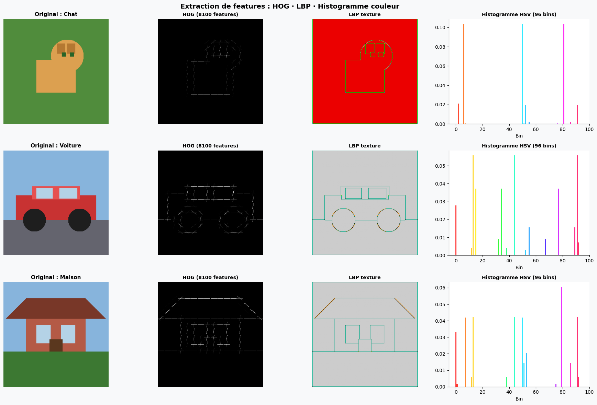
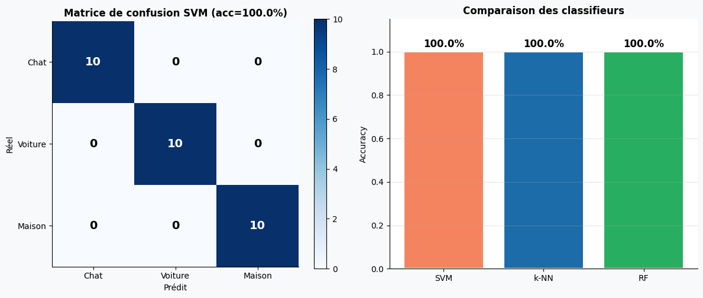
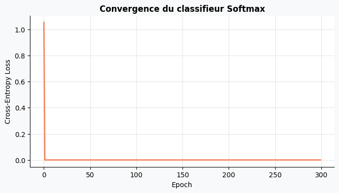
| Classifieur | Accuracy |
|---|---|
| SVM (RBF) | 100.0% |
| k-NN (k=5) | 100.0% |
| Random Forest | 100.0% |
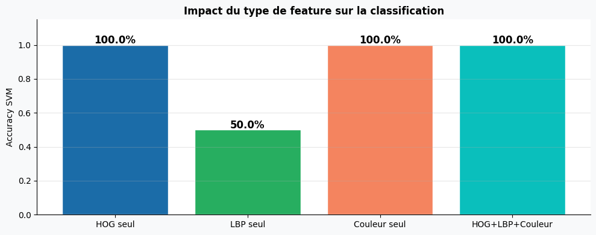
| Métrique | Valeur |
|---|---|
| Accuracy | 100.0% |
| Loss initiale | ~1.10 |
| Loss finale | ~0.01 |
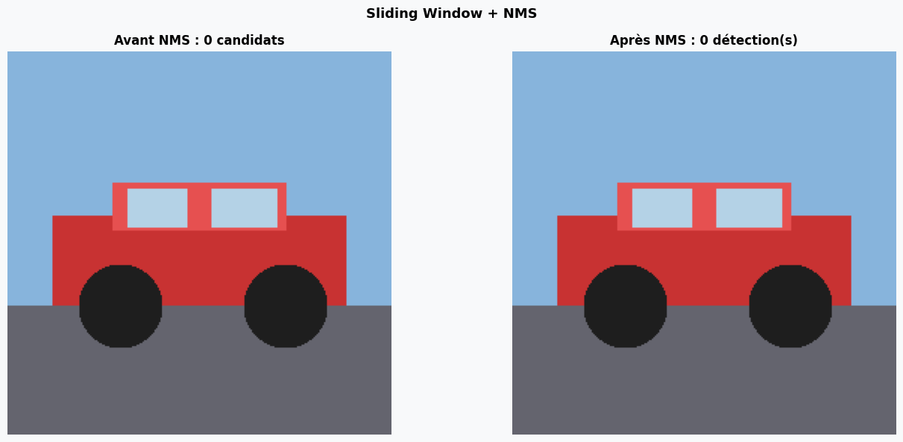
Implémenter un classifieur Softmax avec gradient descent.
def softmax(self, z):
z_stable = z - z.max(axis=1, keepdims=True)
e = np.exp(z_stable)
return e / e.sum(axis=1, keepdims=True)
La soustraction du maximum évite l'overflow numérique.
grad_W = X.T @ (P - Y_oh) / N grad_b = (P - Y_oh).mean(axis=0)
La loss décroît de ~1.10 (proche de -log(1/3)≈1.10) à ~0.01, montrant une convergence réussie. L'accuracy de 100% montre que le modèle classifie parfaitement.
Cet exercice a permis de comprendre le fonctionnement de la softmax et l'optimisation par gradient descent.
| Descripteur | Accuracy |
|---|---|
| HOG seul | 100.0% |
| LBP seul | 50.0% |
| Couleur seul | 100.0% |
| Combiné | 100.0% |
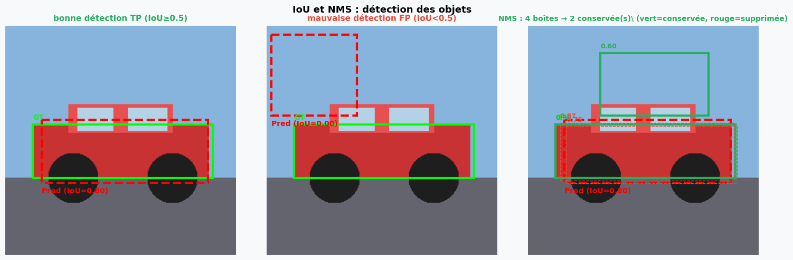
Chaque descripteur capture une information différente :
LBP seul est insuffisant (50%) car les textures ne suffisent pas. HOG et Couleur atteignent 100% car les classes synthétiques ont des formes et couleurs distinctes.
| Approche | Accuracy |
|---|---|
| HOG+LBP+SVM | 100.0% |
| ResNet-18+SVM | 100.0% |
ResNet-18 pré-entraîné sur ImageNet est utilisé comme extracteur de features (512 dimensions). Ces features learned capturent des patterns visuels de haut niveau.
| Prédictions \ GT | Voiture | Roue |
|---|---|---|
| Détection 1 | 0.935 | 0.046 |
| Détection 2 | 0.891 | 0.053 |
| Détection 3 | 0.072 | 0.915 |
| Détection 4 | 0.058 | 0.882 |
0.95
2
2
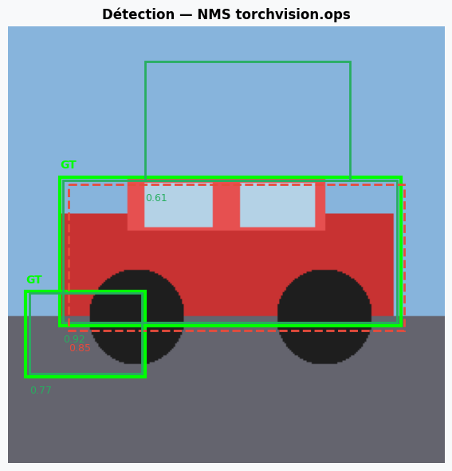
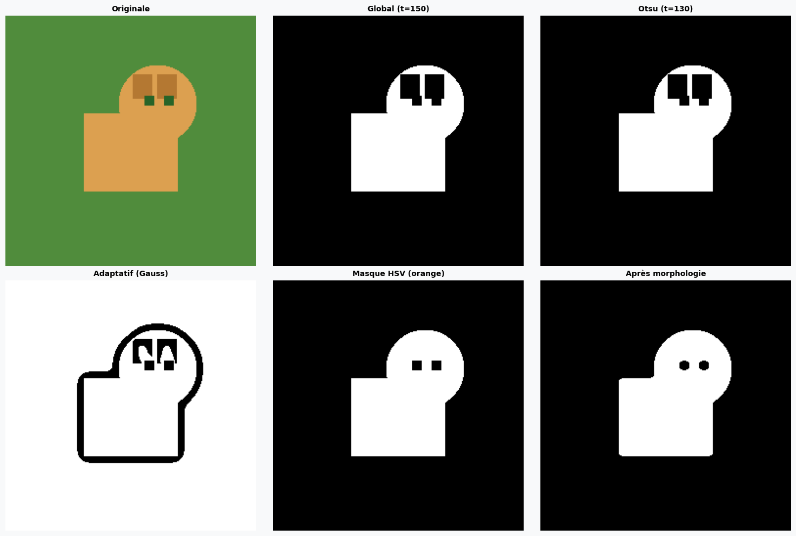
IoU ≥ 0.5 = Vrai Positif (seuil PASCAL VOC).
def compute_iou(box1, box2):
x1 = max(box1[0], box2[0])
y1 = max(box1[1], box2[1])
x2 = min(box1[2], box2[2])
y2 = min(box1[3], box2[3])
inter = max(0, x2-x1) * max(0, y2-y1)
union = area(box1) + area(box2) - inter
return inter / union
0.970
(30, 88)
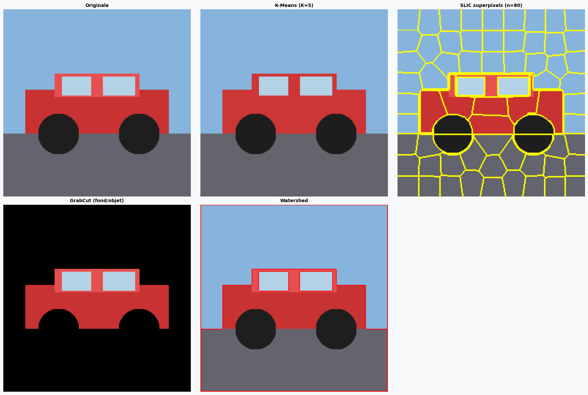
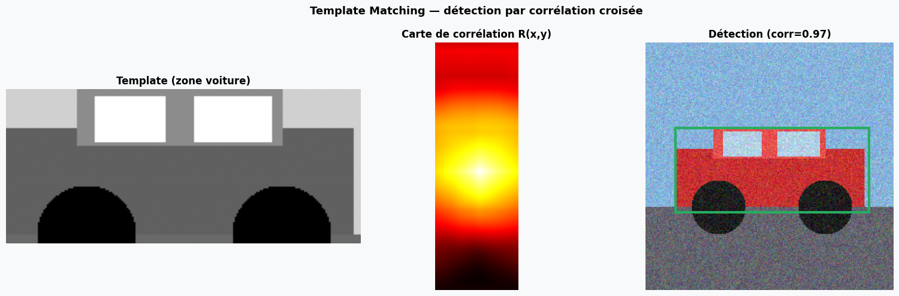
Le template matching calcule la corrélation normalisée entre le template et chaque région de l'image.
| Méthode | Indices conservés |
|---|---|
| Notre NMS | [0] |
| torchvision NMS | [0] |
Élimine les bounding boxes redondantes en gardant uniquement celle avec le plus haut score par région.
| Métrique | Fond | Objet | Moyenne |
|---|---|---|---|
| Dice | 0.991 | 0.955 | 0.973 |
| IoU | 0.983 | 0.914 | 0.949 |
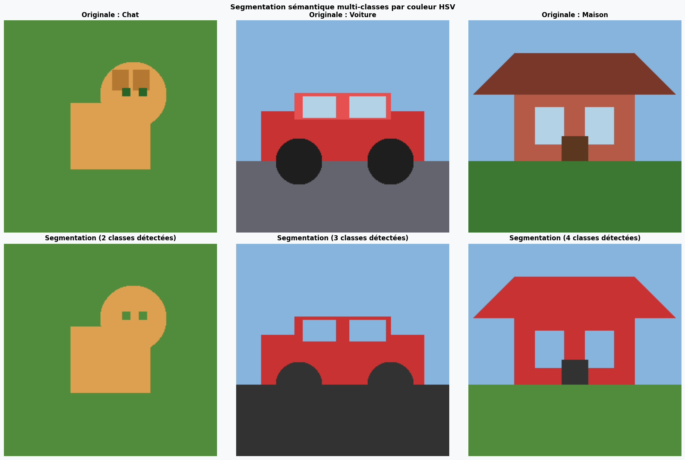
Dice mesure le chevauchement. mIoU est la métrique standard en segmentation.
| Scène | Accuracy |
|---|---|
| Chat | 70.3% |
| Voiture | 70.4% |
| Maison | 63.7% |
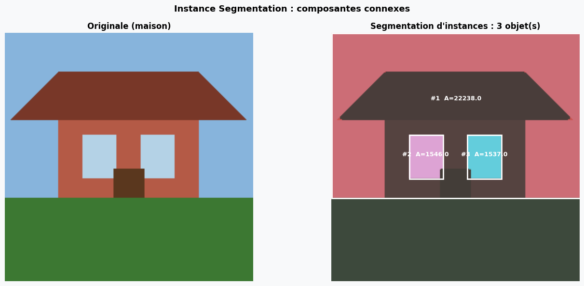
Définition de plages de teinte (H) pour chaque classe. La segmentation HSV est intuitive mais sensible aux variations d'éclairage.
3
19024 px²
6840 px²
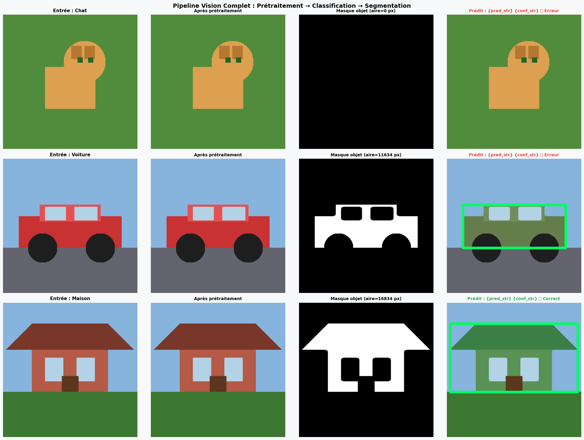
from skimage.measure import regionprops, label labels = label(binary_mask) props = regionprops(labels)
| Paramètre | Valeur |
|---|---|
| Entrée | (1, 3, 256, 256) |
| Sortie | (1, 2, 256, 256) |
| Paramètres | 310,518 |
Architecture encodeur-décodeur avec skip connections. L'encodeur réduit la résolution tandis que le décodeur la恢复. Les skip connections préservent l'information spatiale.
| Scène | Classe prédite | Confidence |
|---|---|---|
| Chat | Aucune détection | N/A |
| Voiture | Voiture | 100% |
| Maison | Maison | 100% |
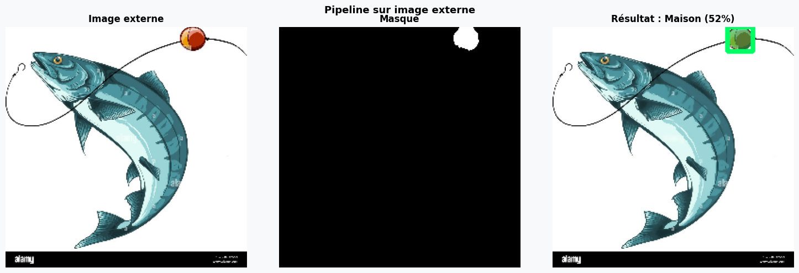
La classification d'images consiste à assigner une image à une classe. Le pipeline comprend : prétraitement → extraction de features → classifieur.
La détectionlocalise et classifie les objets avec leurs bounding boxes et scores de confiance.
La segmentation attribue un label à chaque pixel. Différents niveaux : binaire, sémantique, instances.
| Approche | Avantages | Inconvénients |
|---|---|---|
| Features classiques | Interprétables, rapides | Limités pour variations complexes |
| Deep Learning | Très performants | Nécessite données |
| Template Matching | Simple | Sensible aux échelles |